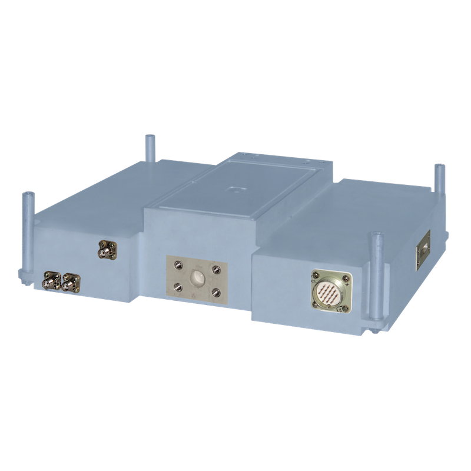

Приемо-передающий модуль (ППМ) гибридно-интегрального исполнения на современной элементной базе с твердотельным усилителем мощности передатчика, предназначенный для работы в составе бортовой метеорологической РЛС.
ППМ обеспечивает:

| диапазон рабочих частот | X |
| шаг переключения выходных рабочих частот, МГц | 2 |
| котносительная нестабильность за время эксплуатации | ±1x10-7 |
| время переключения выходных рабочих частот, мкс | 2 |
| относительная спектральная плотность мощности фазовых флуктуаций относительно несущей на отстройке 1.0 кГц, дБ/Гц | -100 |
| относительный уровень дискретных спектральных составляющих в спектре сигнала, дБ | -80 |